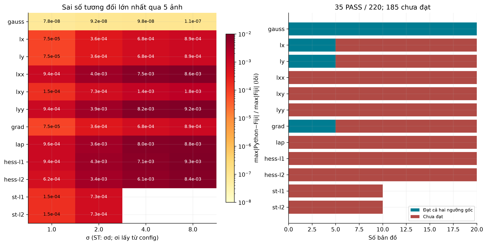
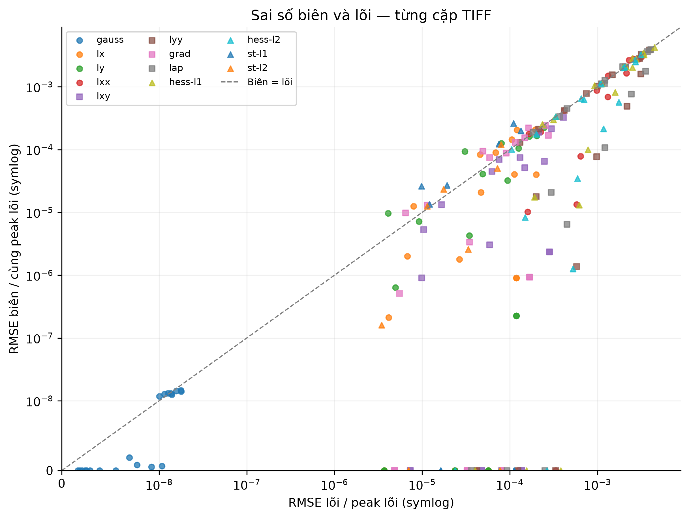
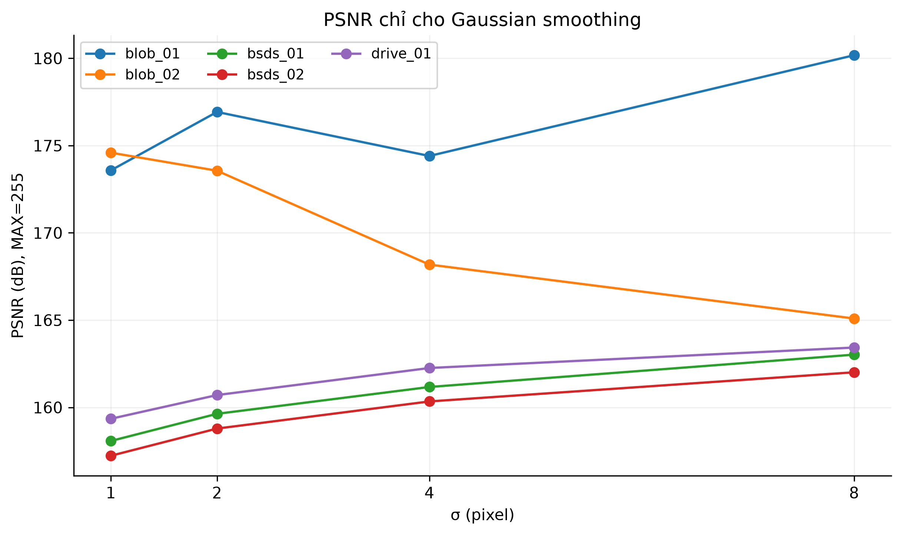
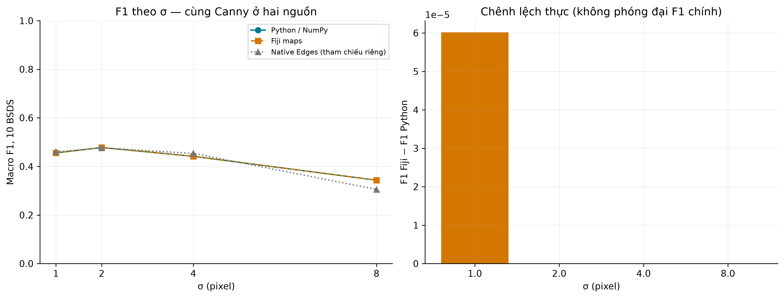
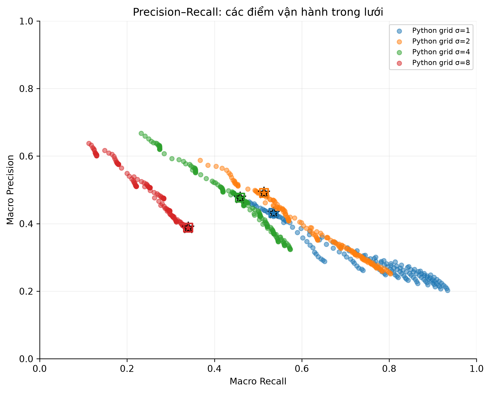
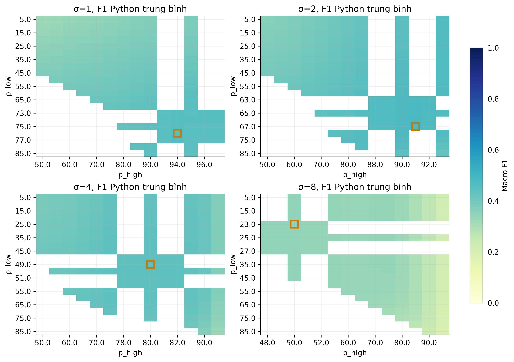
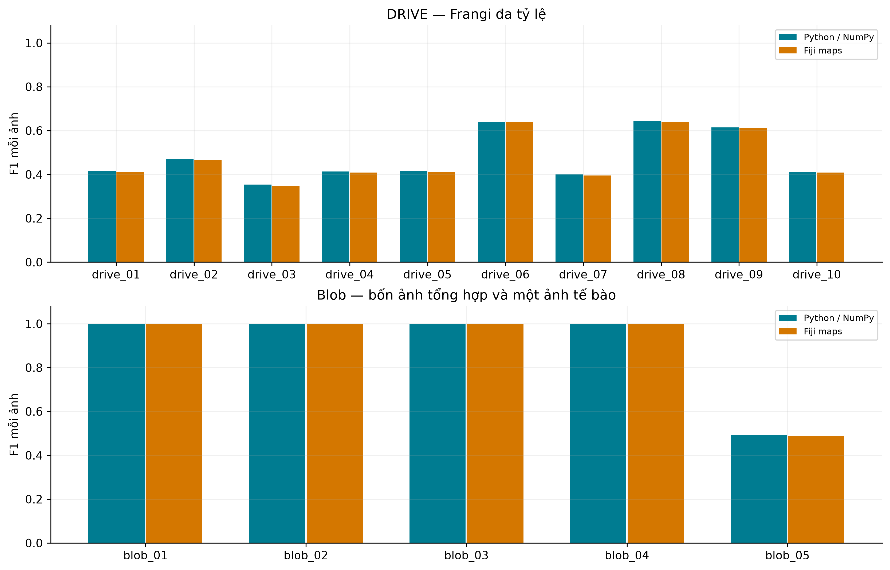
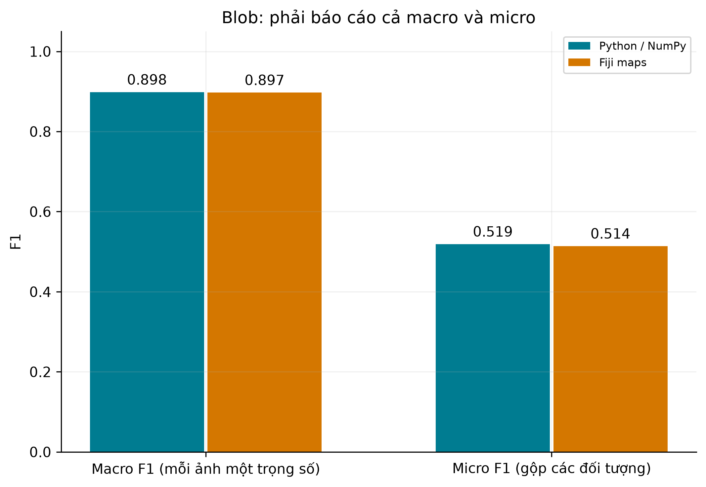
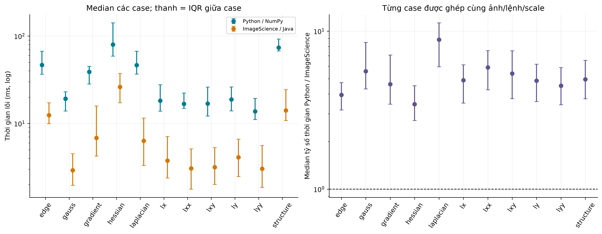
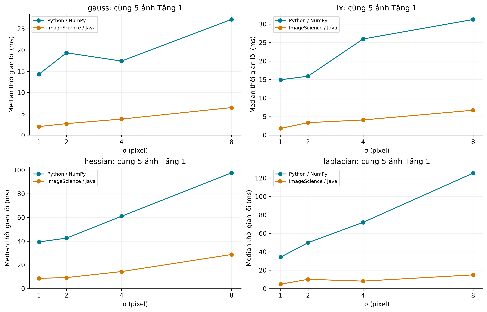

Đối chuẩn số học Tầng 1

220 cặp; relative error <1e-4 và Pearson >0.9999. ST chỉ có hai cặp scale, ô trống không phải thiếu file.
PNG 300 DPI · SVG · PDF
Sai số vùng biên

Mỗi điểm là một cặp TIFF. Cùng peak lõi trên cả hai trục; phía trên đường chéo là RMSE biên lớn hơn. Thang symlog tuyến tính gần 0 (<=1e-8), giữ cả điểm bằng 0; không bỏ các biên ảnh tổng hợp có sai số cực nhỏ.
PNG 300 DPI · SVG · PDF
PSNR Gaussian

20 bản đồ Gaussian, chấm vùng lõi. PSNR cao phản ánh sai số nhỏ; không áp dụng chỉ số này cho đạo hàm có dấu.
PNG 300 DPI · SVG · PDF
Cạnh: F1 theo sigma

Canny dùng ngưỡng chọn trên Python rồi đóng băng cho Fiji tại từng σ. Native Edges có thuật toán/ngưỡng riêng.
PNG 300 DPI · SVG · PDF
Các điểm Precision–Recall

Chấm nhỏ: lưới Python; sao: cặp được chọn; ô vuông: Fiji tại cùng cặp. Đây là các điểm lưới hai ngưỡng, không phải đường PR liên tục; không tính AP/AUC.
PNG 300 DPI · SVG · PDF
Lựa chọn ngưỡng Canny

Ô có màu là mean F1 trên 10 ảnh Python; ô trống là cặp không khảo sát/không hợp lệ, không phải F1=0. Khung cam là cặp được chọn trong lưới thô và tinh.
PNG 300 DPI · SVG · PDF
Ridge và Blob: kết quả từng ảnh

Cùng ngưỡng giữa hai nguồn. F1 thấp trên blob_05 thể hiện khoảng cách từ ảnh tổng hợp tới ảnh sinh học.
PNG 300 DPI · SVG · PDF
Macro và micro F1 của blob

Bốn ảnh tổng hợp có 4 đối tượng mỗi ảnh, ảnh tế bào có 276. Macro cao không đại diện cho khả năng phát hiện tế bào.
PNG 300 DPI · SVG · PDF
Thời gian chạy theo phép toán

357 case, mỗi case bỏ 1 warm-up và lấy median 5 lần đo. IQR thể hiện phân bố giữa case; trên 1 ở biểu đồ tỷ số nghĩa là Python mất nhiều thời gian hơn. Lõi ImageScience headless, không phải GUI Fiji.
PNG 300 DPI · SVG · PDF
Thời gian chạy theo sigma

Giữ cố định cùng 5 ảnh Tầng 1 cho cả bốn lệnh và mọi sigma. Mỗi điểm là median 5 case; mỗi case là median 5 lần sau warm-up.
PNG 300 DPI · SVG · PDF